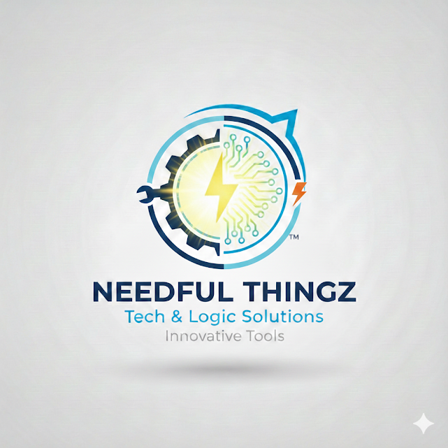

Solution Architect | HVAC Systems Specialist
I spent over 10 years in the field, so I know exactly what it feels like to be on a roof at 2:00 PM in July with "brain fog" setting in. I realized the industry didn't just need more parts changers—it needed better logic.
I transitioned from Field Technician to Solution Architect to solve the biggest problem in our trade: The Knowledge Gap.
I built Needful Thingz Tech Logic to digitize the diagnostic process. My goal is to give every technician—whether it's their first day or their tenth year—a standardized, logic-based path to the right repair, reducing callbacks and protecting equipment.
I don't just fix machines; I engineer the logic that keeps them running.
A proprietary, 8-module framework designed for complex data orchestration, hyper-efficient state management, and enterprise-level scalability.